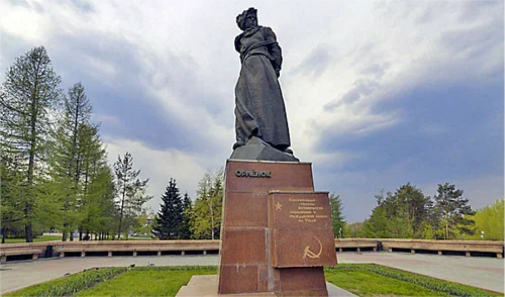

Памятник “Орлёнок”

2025 год президент России Владимир Путин предложил объявить годом защитника Отечества "В честь наших героев и участников специальной военной операции и в память о подвигах всех наших предков, сражавшихся в разные исторические периоды за Родину".
К сожалению, не все жители и гости города Челябинска знают о своей истории и помнят ее.
Поэтому у нас возникла идея создания сайта о памятниках защитникам Отечества в Челябинске.